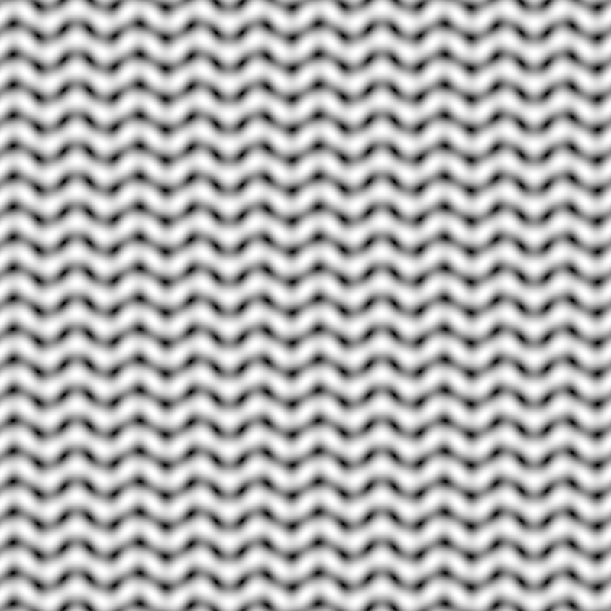
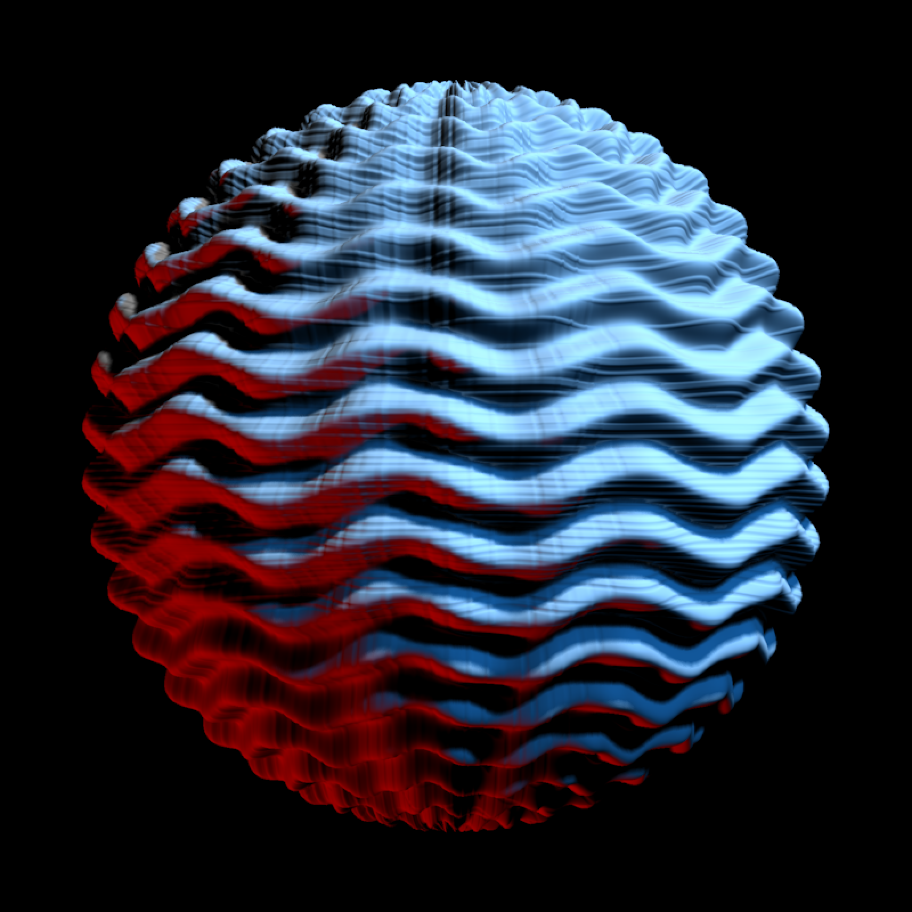
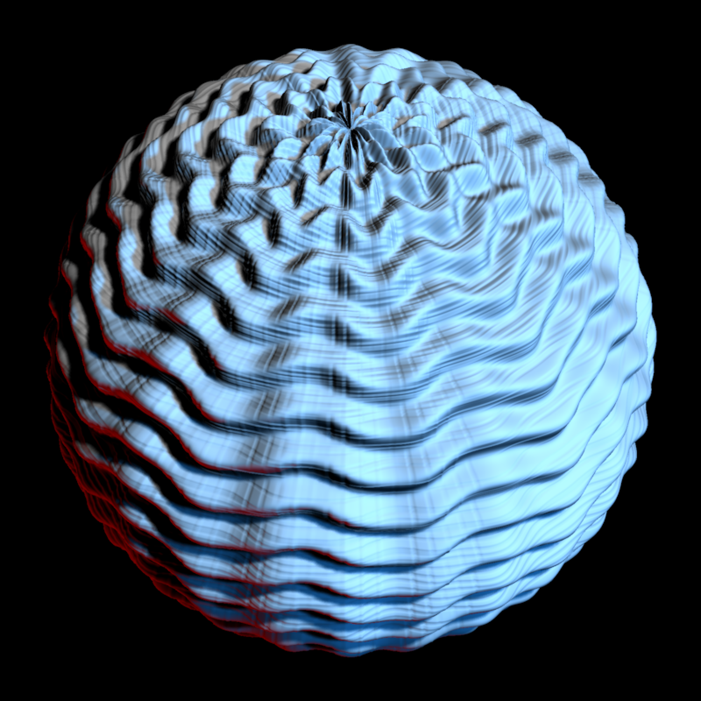
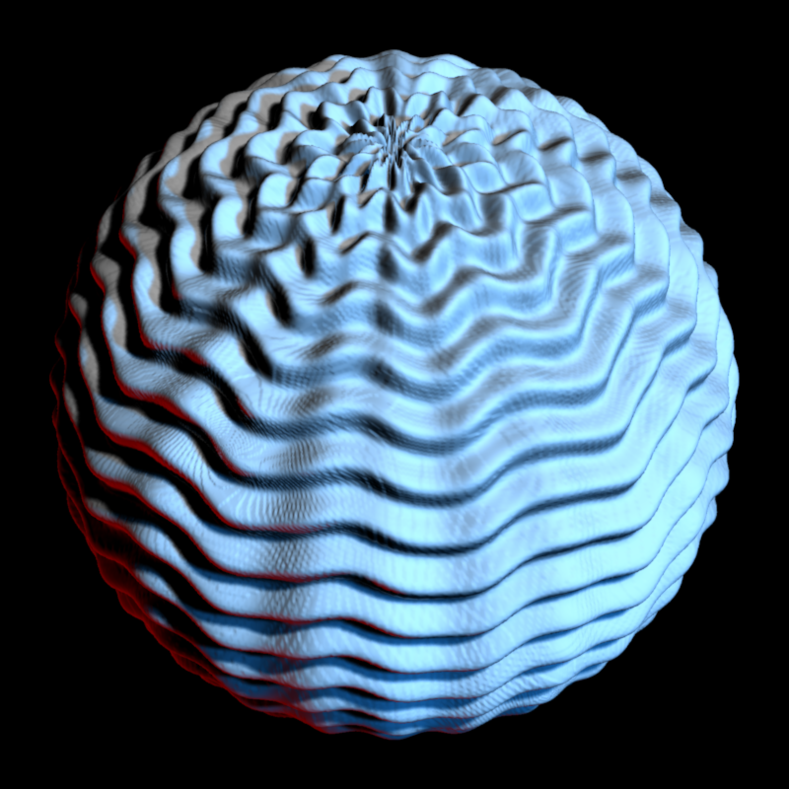

Construct Displacement Sphere
Image or matrix/array that will be used to displace the sphere.
Default 1. Scale of the displacement.
Default FALSE. Whether to use a subdivided cube instead of a UV sphere. Use this
if you want to visualize areas near the poles.
Default NA. Number of times to subdivide the cube before
projecting it to a sphere. When NA, this is calculated from the displacement texture
resolution as max(1, ceiling(log((width * height) / 12) / log(4))), where
width * height is the number of pixels in the texture, 12 is the number of starting
cube triangles, and each subdivision level increases the triangle count by about 4.
Default TRUE. Whether to displace the sphere, or just generate the initial mesh
for later displacement.
Default TRUE. Whether to print displacement texture information.
Default c(0,0,0). Position of the mesh.
Default c(1,1,1). Scale of the mesh. Can also be a single numeric value scaling all axes uniformly.
Default c(0,0,0). Angle to rotate the mesh.
Default c(0,0,0). Point around which to rotate the mesh.
Default c(1,2,3). Order to rotate the axes.
Default material_list() (default values). Specify the material of the object.
raymesh object
texture_dim = 800
u = seq(0, 2 * pi, length.out = texture_dim)
v = seq(0, 2 * pi, length.out = texture_dim)
knit_texture = outer(u, v, function(x, y) {
sin(10 * x + 0.75 * sin(10 * y))^2 + 0.35 * cos(12 * y)^2
})
knit_texture = (knit_texture - min(knit_texture)) / diff(range(knit_texture))
knit_texture = array(
rep(knit_texture, 3),
dim = c(texture_dim, texture_dim, 3)
)
rayimage::plot_image(knit_texture)

light_info = directional_light(c(1,1,1), color="dodgerblue",intensity=0.8) |>
add_light(directional_light(c(-1,-1,0.1), color="red",intensity=0.8)) |>
add_light(directional_light(c(0.5,1,0.5),intensity=0.8))
displacement_sphere(knit_texture,
displacement_scale = 0.08, verbose = TRUE) |>
rasterize_scene(light_info = light_info, fov=15)
#> Displacing mesh with 800x800 texture
#> Setting `lookat` to: c(-0.00, -0.00, -0.00)

#The default sphere has issues near the poles
displacement_sphere(knit_texture, displacement_scale = 0.08) |>
rasterize_scene(light_info = light_info, fov=10, lookfrom=c(0,10,10))
#> Displacing mesh with 800x800 texture
#> Setting `lookat` to: c(-0.00, -0.00, -0.00)

# A cube will render more nicely near the poles
displacement_sphere(knit_texture, use_cube = TRUE, displacement_scale = 0.08) |>
rasterize_scene(light_info = light_info, fov=10, lookfrom=c(0,10,10))
#> Displacing mesh with 800x800 texture
#> Setting `lookat` to: c(-0.00, 0.00, 0.00)
